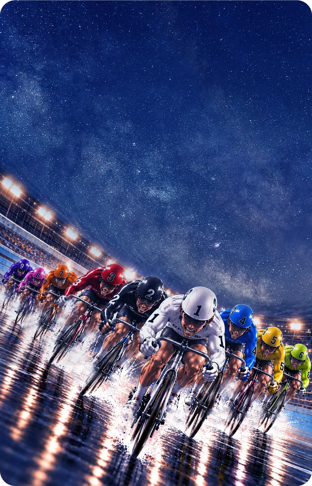
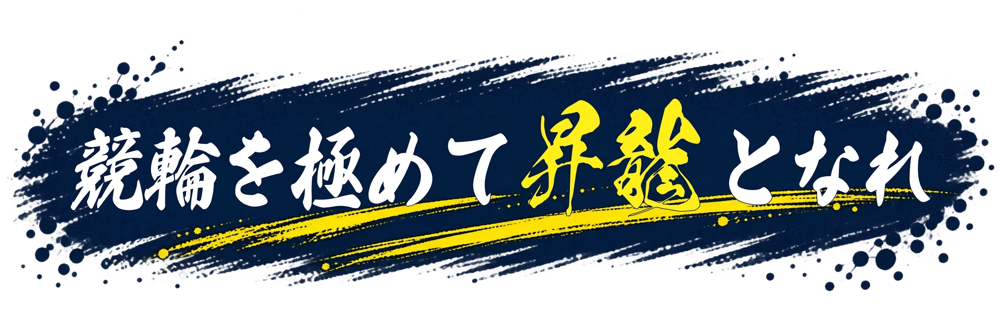
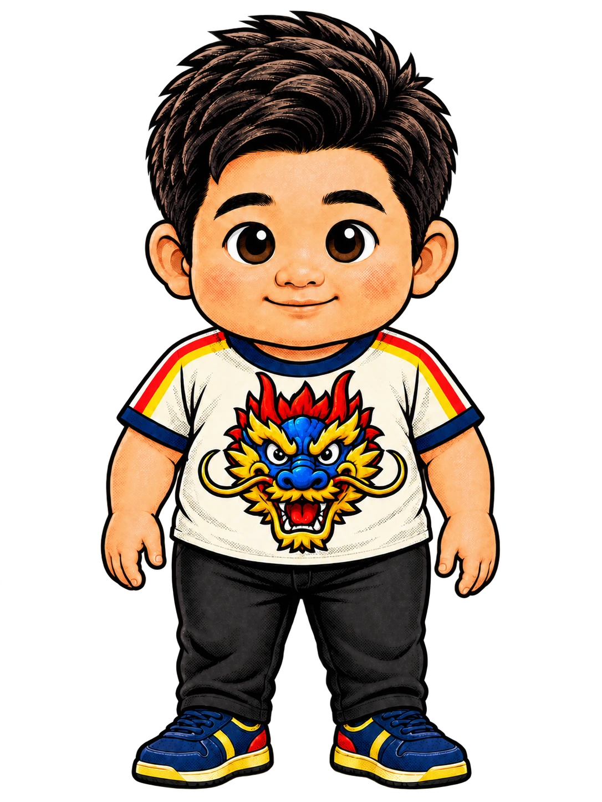
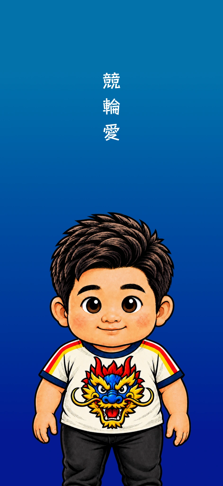
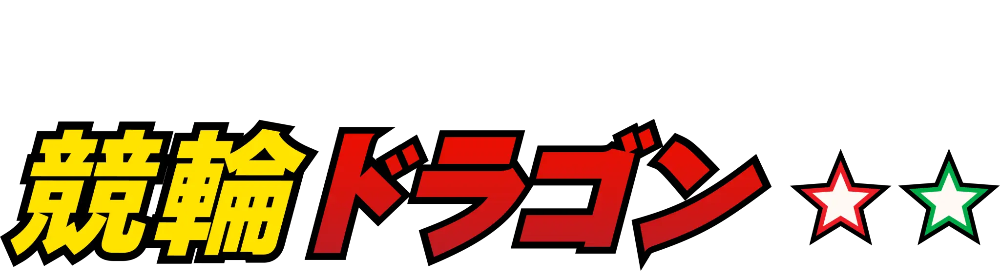

スペシャル・アドバイザー
平原 康多 氏
GIレース９勝を誇るレジェンド。
果敢な先行や自在戦で多くのドラマを作った
「平成最高の競輪選手」の一人。

配信日時は登録なしで確認できます（日本時間）
競輪ファン歴30年超！ 競輪で飯を食って20年！
元テレビプロデューサーで「競輪の全てを知る男」こうちゃんと
GIレース９勝「ファンも認める最高の競輪選手」だった
平原康多 氏をはじめとする
競輪レジェンドたちが、Gレースの見どころや舞台裏を
ほぼ毎日ライブ配信！
ここでしか聞けない競輪トーク！
毎晩が競輪のGレース前夜祭や〜！
当サロンは、予想の買い目は出しません！
「みんなで競輪の話をしよう！！」

競輪ドラゴンのライブ配信
競輪レジェンドたちがGレースの見どころや舞台裏をほぼ毎日ライブ配信！
ライブ配信を見る視聴リンクは、ご登録のメールアドレスへ個別にお届けする予定です。
配信スケジュールを見る配信日時は、会員登録・LINE登録なしで確認できます。
ライブ配信アーカイブを見る会員登録なしで見られる切り抜き動画を順次公開
スペシャル・アドバイザー
GIレース９勝を誇るレジェンド。
果敢な先行や自在戦で多くのドラマを作った
「平成最高の競輪選手」の一人。
競輪レジェンド
西日本のレジェンド。S級30年、通算430勝・優勝45回。39歳でGIを制した『顔は怖いが人情に厚い名レーサー』。息の長い活躍でファンに愛された。
主宰
地上波キー局の競輪中継の
ディレクター・プロデューサーとして20年。
「競輪を現場で見てきた男」。競輪ファン歴は30年を超える。
他にも代表作「NO KEIRIN, NO LIFE」「けいりんマルシェ」など。

スペシャル・アドバイザー
GⅠレジェンドの方々や
各業界の競輪愛好家の皆様が登場します！
ご登録で、スマホ待ち受け画面をプレゼント！
公式LINEで、利用規約をご確認のうえ会員登録のお手続きへ。

ご登録いただくと「競輪ドラゴン」
オリジナル・スマホ待ち受け画面プレゼント！
掲載画像はイメージです。
TOPICS & LIVE SCHEDULE
競輪ドラゴンの配信予定とお知らせ。レースの前夜に、翌日の予想をお届けします。時刻は日本時間です。
11件のトピック
配信時間 21:30頃〜23:00頃 （日本時間）
このトピックの詳細配信時間 22:00頃〜23:30頃 （日本時間）
このトピックの詳細配信時間 21:30頃〜23:00頃 （日本時間）
このトピックの詳細配信時間 21:30頃〜23:00頃 （日本時間）
このトピックの詳細配信時間 21:30頃〜23:00頃 （日本時間・暫定）
開催区分は確認中のため、配信時刻は暫定です。
このトピックの詳細配信時間 21:30頃〜23:00頃 （日本時間・暫定）
開催区分は確認中のため、配信時刻は暫定です。
このトピックの詳細配信時間 21:30頃〜23:00頃 （日本時間・暫定）
開催区分は確認中のため、配信時刻は暫定です。
このトピックの詳細配信時間 21:30頃〜23:00頃 （日本時間・暫定）
開催区分は確認中のため、配信時刻は暫定です。
このトピックの詳細配信時間 21:30頃〜23:00頃 （日本時間・暫定）
開催区分は確認中のため、配信時刻は暫定です。
このトピックの詳細配信時間 21:30頃〜23:00頃 （日本時間・暫定）
開催区分は確認中のため、配信時刻は暫定です。
このトピックの詳細配信時間 21:30頃〜23:00頃 （日本時間・暫定）
開催区分は確認中のため、配信時刻は暫定です。 GPは準決勝がないため、最終日（12/30）の前夜までの3夜を配信予定です。
このトピックの詳細該当するトピックはありません。
配信予定は変更される場合があります。最新の掲載内容をご確認ください。
時刻は日本時間
予想対象 初日（10/09）
ゲスト 平原康多
予想対象 2日目（10/10）
ゲスト 三宅伸
予想対象 準決勝（10/11）
ゲスト 三宅伸
予想対象 決勝（10/12）
ゲスト 平原康多 三宅伸
時刻は日本時間
予想対象 初日（10/17）
予想対象 2日目（10/18）
予想対象 準決勝（10/19）
予想対象 決勝（10/20）
時刻は日本時間
予想対象 初日（10/22）
ゲスト出演予定 平原康多
予想対象 2日目（10/23）
ゲスト出演予定 平原康多
予想対象 準決勝（10/24）
予想対象 決勝（10/25）
時刻は日本時間
予想対象 初日（10/31）
予想対象 2日目（11/01）
予想対象 準決勝（11/02）
予想対象 決勝（11/03）
時刻は日本時間・暫定
予想対象 初日（11/05）
予想対象 2日目（11/06）
予想対象 準決勝（11/07）
予想対象 決勝（11/08）
時刻は日本時間・暫定
予想対象 初日（11/12）
予想対象 2日目（11/13）
予想対象 準決勝（11/14）
予想対象 決勝（11/15）
時刻は日本時間・暫定
予想対象 初日（11/18）
予想対象 2日目（11/19）
予想対象 3日目（11/20）
予想対象 4日目（11/21）
予想対象 準決勝（11/22）
予想対象 決勝（11/23）
時刻は日本時間・暫定
予想対象 初日（12/03）
予想対象 2日目（12/04）
予想対象 準決勝（12/05）
予想対象 決勝（12/06）
時刻は日本時間・暫定
予想対象 初日（12/10）
予想対象 2日目（12/11）
予想対象 準決勝（12/12）
予想対象 決勝（12/13）
時刻は日本時間・暫定
予想対象 初日（12/19）
予想対象 2日目（12/20）
予想対象 準決勝（12/21）
予想対象 決勝（12/22）
時刻は日本時間・暫定
予想対象 初日（12/28）
予想対象 2日目（12/29）
予想対象 最終日（GP）（12/30）
LIVE HIGHLIGHTS
会員登録なしで見られる、ライブ配信の切り抜き動画を公開します。
順次公開予定
動画は配信開始後、順次公開予定です。
公開した動画は、このページでご案内します。
配信日時は、会員登録なしでご確認いただけます。
会員登録は公式LINEから。視聴リンクは、ご登録のメールアドレスへ個別にお届けする予定です。
HOW TO WATCH LIVE
配信日時と、ご視聴までの流れをご案内します。
視聴リンクは、ご登録のメールアドレスへ個別にお届けする予定です。
以下は現在準備中の視聴方法です。正式な手順は、登録時のご案内でお知らせします。
利用規約をご確認・同意のうえ、案内に沿って会員情報をご登録ください。
ご登録のメールアドレスへ、Zoomの視聴リンクを個別にお届けする予定です。
配信日時をご確認のうえ、届いたメールのご案内に沿ってライブをお楽しみください。
配信予定・トピック一覧からご確認いただけます。時刻は日本時間です。配信日時の確認に会員登録は必要ありません。
ご登録のメールアドレスに誤りがないか、迷惑メールフォルダーや受信設定をご確認ください。メールの送付時期・手順は、登録時のご案内をご確認ください。
対象の配信日時と、届いたメールのご案内をご確認ください。解決しない場合は、登録時または案内メールに記載された運営窓口へお問い合わせください。

FAQ
気になる項目を選ぶと 回答が開きます
「めちゃ×２競輪がくわしくなる」会員制オンラインサロンです🐉 競輪ファン歴30年超・元テレビプロデューサーの「こうちゃん」と、GIレース9勝のレジェンド・平原康多さんをはじめとする競輪レジェンドたちが、Gレース開催中はほぼ毎日オンラインで集合。テレビの解説では聞けない話、ネットにも載っていない話を、会員のみなさんと一緒に楽しむ場所です。
大歓迎です。ラインや並びの意味、選手同士の関係、決まり手の読み方まで、その場で質問していただけます。逆に30年見てきた方でも「そうだったのか」と膝を打つ話が出るのが、この部屋の面白いところです。
大きく4つです。 ① Gレース前夜祭LIVE（Zoom／GⅢ以上の開催中はほぼ毎日） ② 公式LINE（Gレースのヒントや競輪ドラゴンのつぶやきが届きます） ③ 会員限定MOVIE（各界の大物が競輪愛を語る特別対談など） ④ オフ会・現地イベント（ほぼ毎月開催予定）
株式会社ネクストゲート（東京都港区）が運営しています。詳しくは「特定商取引法に基づく表記」をご覧ください。
GⅠ・GⅡ・GⅢの開催期間中に実施します。前検日の夜から準決勝日の夜まで、毎晩の開催です。「前夜祭」ですので、前検日の夜に初日の話、準決勝日の夜に決勝の話をします。4日制なら4夜、6日制なら6夜。これで決勝まで全日程をカバーできます。 ※F1・F2開催、および決勝当日の夜は配信しません。
開催区分によって変わります。 ・デイ開催 21:30〜23:00 ・ナイター開催 22:00〜23:30 を予定しています。 その月の配信スケジュールは、会員サイトと公式LINEで事前にお知らせします。
会員限定ページに掲載しているURLからZoomにご入室ください。待機室で会員番号とお名前（ご登録名）を確認のうえ、順次お通しします。2026年11月30日までは無料で視聴できます。有料プラン開始後の参加費は月額会費に含まれており、別途料金はかかりません。
不要です。カメラオフ・ミュートのまま、聞くだけの参加で大丈夫です。ご質問はチャットでも受け付けます。お酒を片手にどうぞ（笑）
【なし：その場限りの内容のため、アーカイブは残しません】【参考になる重要な情報は公式LINEにもその後流します】
できます。お仕事帰りに途中からのご参加も歓迎です。
申し訳ありませんが、すべて禁止です。録音・録画・スクリーンショット・写真撮影・文字起こし・切り抜きの作成、およびSNS等への投稿は会員規約（第6条）で禁止しています。ここだけの話が毎晩できるのは、外に出ないという前提があるからです。違反が確認された場合は、警告なく強制退会となり、損害賠償・法的措置の対象となります。 ※運営が「OK」とお伝えしたものに限り、保存いただけます。
あります。出演者の体調等により、予告なく変更・延期・中止となる場合があります。この場合の会費の減額・返金は行っておりません。あらかじめご了承ください。
注目レースについて、競輪のスペシャリストが「どこを見るか」を徹底的に解説します。出走表だけでは見えない並びの読み、脚質から考える決まり手、人気に隠れて浮きそうな選手──そうしたレースの読み解き方をお伝えする場です。 あくまで競輪をより深く楽しむための情報提供であり、的中や利益を保証するものではありません。車券のご購入はご自身の判断と責任でお願いします。
お約束はできません。競輪は的中に関係なく面白いスポーツである、というのが正直なところです。本サロンは的中や利益を保証するものではなく、「必ず当たる」「月○万円稼げる」といった性質のサービスではありません。無理のない範囲でお楽しみください。
行っておりません。車券の購入代行、資金のお預かり、払戻金の管理は一切いたしません。会員同士での購入代行の依頼・受託、共同購入の勧誘、金銭の授受も禁止しています。
お控えください。SNSのDM、電話、メール、面会のお申し出、練習場・宿舎・競輪場への訪問など、サロンが用意した場以外での接触はご遠慮いただいています。金品・贈答品・飲食のご提供も同様です。 選手やレジェンドが安心して本音を話せる場を守るためのルールです。ご質問はぜひ配信中に、その場でぶつけてください。
恐れ入りますが、お受けできません。ご厚意はありがたいのですが、公正の観点から一律でお断りしています。
出演者・他の会員・スタッフへの暴言、罵倒、威圧的な発言、性的な発言、容姿や成績・落車をからかう発言はご遠慮ください。また、出演者の住所・家族構成・私生活などを調べたり、推測して書き込んだりする行為（いわゆる特定行為）は固く禁止しています。 該当する言動があった場合、事前の警告なくミュート・強制退出とさせていただくことがあり、内容によっては一度でも除名となります。
【当面は会員同士の直接のやり取りを制限しています。まずは配信とイベントでの交流からスタートし、コミュニティ機能は準備が整い次第ご案内します。】
12月よりグレード制の会員システムが始まり、月額【3,300】円（税込）が基本ランクとなります。詳しくは11月にお知らせいたします。毎月自動で決済される継続課金（サブスクリプション）で、退会手続きをされるまで課金が続きます。それまでは無料でご参加いただけます。
クレジットカード（VISA／Mastercard／JCB／American Express／Diners）をご利用いただけます。決済は決済代行サービスを通じて行われ、当社がカード情報を保持することはありません。
初回は入会お申し込み時、2回目以降は毎月１日に翌月分を自動決済します。日割計算は行っておりません。
月の途中の入会・退会いずれの場合も、日割計算および返金は行っておりません。
いつでも退会いただけます。【会員サイトの退会フォーム／決済サービス上の解約手続き】からお手続きください。退会はお申し出のあった月の末日をもって効力が生じます。次回決済日の２０日前までにお手続きがない場合、翌月分の会費が決済されることがありますのでご注意ください。お支払い済みの会費は返金いたしかねます。
デジタルコンテンツおよび役務の提供という性質上、お支払い済みの会費は理由を問わず返金いたしません。通信販売に該当するため、クーリング・オフ制度の適用もありません。 ただし、当社都合でサービス全体を終了する場合は、終了日以降の期間分を日割りで返金します。また、二重決済など当社の決済処理に誤りがあった場合は、確認のうえ速やかに返金いたします。
20歳以上の方に限りご入会いただけます。自転車競技法により20歳未満の方の車券購入が禁止されているためです。お申し込み時に生年月日をご確認させていただきます。
次のような場合はご入会をお断りすることがあります。お申し込み内容に虚偽があった場合、過去に規約違反で除名された場合、反社会的勢力に該当する場合、競輪選手・選手養成所の生徒・競輪関係団体の役職員等で所属団体の規程上参加が制限されている場合、同業サービスへの情報流用が目的と判断される場合などです。
できません。1名につき1アカウントです。Zoomの固定URL・パスコードを含め、第三者への貸与・共有・開示は禁止しています（会員規約第5条・第6条）。 アカウントの共有が発覚した時点で停止させていただきます。
ほぼ毎月の開催を予定しています。会場・内容はその都度ご案内します。オフラインイベントの参加費・交通費・宿泊費・飲食費は月額会費に含まれず、イベントごとに別途申し受けます。
当日または事前に運営スタッフへお申し出ください。イベントで撮影した写真・映像は、サロンの記録および広告宣伝に使用する場合がありますが、ご希望があれば配慮いたします。
Zoomアプリ（最新版）が動作するPC・スマートフォン・タブレットと、安定したインターネット接続環境です。通信料はお客様のご負担となります。なお、動作環境をご用意いただけないことを理由とする返金はいたしかねます。
初回は少し早めにご入室ください。入室方法のご案内は会員サイトに掲載しているほか、公式LINEでもサポートします。
【info@nextgate-tokyo.com】までメールでお願いいたします（受付時間：平日10:00〜18:00／土日祝・年末年始を除く）。